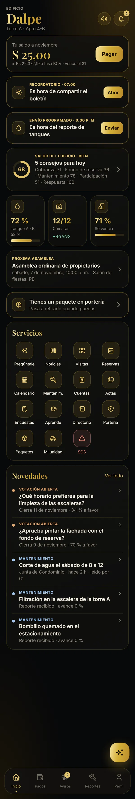

Junta de Condominio · Edificio Dalpe
Cobrar con orden, informar a todos y cuidar el Dalpe desde el teléfono. Este es el recorrido completo, función por función.
Empezar el recorrido
Toca cualquier pantalla para verla completa
Cómo llega a cada vecino
En Android se instala desde un enlace; en iPhone se agrega a la pantalla de inicio. Cada mejora llega al teléfono sin reinstalar nada.
Junta de Condominio · Edificio Dalpe · Chacao, Caracas
Las pantallas muestran datos de ejemplo.